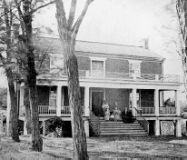

9 Nisan 1865’in öğleden sonrasında Amerika Birleşik Devletleri Ordusu’nun kumandanı Ulysses S. Grant, atı Cincinnati’yi Appomattox Adliye Sarayı’nın olduğu Virgina kasabasındaki küçük bir çiftlik evine sürdü. İçerde onu bekleyen, rakibi Konfederasyon kuvvetlerinin kumandanı Robert E. Lee idi. Dört yıl savaştan sonra Lee, hırpalanmış ordusunun işinin bitirildiği sonucuna varmıştı. Kuzeyliler tarafından tüm tarafları sarılmış halde Konfederasyon güçleri tuzağa düşürüldü. Nazikçe el sıkıştıktan sonra, Lee isyankâr ordusunun teslim olduğu bir anlaşma imzaladı. İç Savaş bitmişti.

1861’de patlak veren İç Savaş, Amerikan tarihinde en kanlı çatışma olarak kaldı. 550.000’den fazla asker öldürüldü ve yüz binlercesi yaralandı. Rakip orduları yöneten iki general, Lee ve Grant, savaşın her iki tarafında kahramanlık ve trajedinin büyük, canlı birer örneği oldular.
Bir deri tabakçısının oğlu olan Grant (1822-1885), Ohio’da doğdu ve West Point’te ABD askerî akademisinde sınıfının en altına yakın bir sırada mezun oldu. İç Savaş’ın Grant’i büyüklüğe itmesinden önce, babası bile onu bir hayal kırıklığı olarak değerlendirmişti. Meksika Savaşı’nda savaştıktan sonra orduyu terk etti ve 1850’lerde babasının deri mağazasında çalışmak üzere dönmeden önce bir dizi iş girişimi başarısızlığa uğradı. Düşmanlıkların patlaması, Grant’e her zaman iyi yaptığı tek şeye geri dönme şansı verdi: Savaş. Bir alkolik olan Grant’in zafere bedeli ne olursa olsun kararlı bağlılığı, ona 1864’te tüm Birlik kuvvetlerinin sorumluluğunu veren Abraham Lincoln’ün güvenini kazandırdı.
Lee (1807-1870), Grant’in aksine, varlıklı ve saygıdeğer bir Virginia ailesinden geldi. Asla disipline verilmemesiyle ün yaptığı West Point’te sınıfından ikincilikle mezun oldu. Lee, Güney’de pek çok adamın iddia ettiği ama pek azının gerçekte yaşadığı ahlâk kurallarına bağlı kaldı. Orduda başarılı bir kariyeri oldu ve Meksika Savaşı’nda Grant ile beraber hizmet etti. Lee, Güney’in ayrılmasına karşıydı, ama memleketi olan Virginia, Birlik’i terk ettiğinde, yeni Konfederasyon’a hizmet etmek için bir onur bağı hissetti.
Appomattox’taki kaçınılmaz öğleden sonrayı hatırlayan Grant sonraları anılarında, “O kadar uzun ve yiğitçe savaşan, ve bir halkın uğruna savaşabileceği en kötü hedeflerden biri olduğuna inandığım bir şey için savaşmasına rağmen, ona ulaşmak adına bu kadar çok acı çeken bir hasmın yıkılışından dolayı hissettiklerim, sevinçten çok daha başka şeylerdi.” diye yazdı.
EK BİLGİ:
1. Kuzeyde aşırı derecede popüler bir şahsiyet olan Grant, 1868’de Amerika Birleşik Devletleri’nin başkanı olarak seçildi, ama tarihçiler onu ülkenin en kötü başkanlarından biri olarak değerlendirirler.